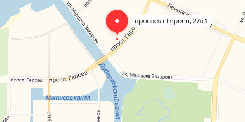

О компании
В нашей аптеке широкий выбор лекарственных препаратов и средств для личного здоровья (гигиены). Помимо всего прочего, вы можете осуществить заказ лекарственных препаратов выписанных врачом по рецепту.

Героев проспект, 27 к1, Санкт-Петербург, Санкт-Петербург и область
Мы гарантируем нашим клиентам качество предлагаемой продукции и высокий уровень обслуживания. Наши аптеки отличает широкий ассортимент с возможностью заказа препаратов индивидуально,удобный график работы. В аптеках нашей сети представлены самые последние достижения современной медицины и индустрии красоты, которые позволят вам чувствовать себя на все сто процентов! У нас можно найти нужные лекарства - от аспирина до редких препаратов,возможность купить домашние медицинские приборы, а также с помощью опытных консультантов подобрать лечебную косметику и средства личной гигиены. В аптеках "ФармаМед" гарантируется высокое качество обслуживания покупателей и индивидуальный подход к каждому клиенту!